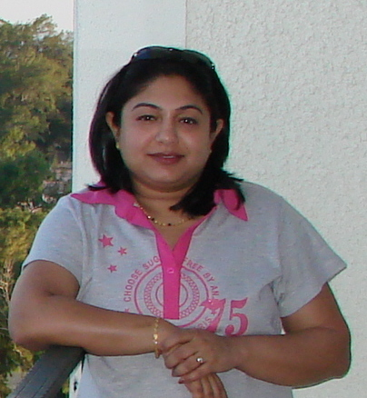

About Me

I Believe In Simple and Clean Design Solutions
As a freelancer and consultant, with customer first approach I provide cost-effective and compelling Web design, Web development and marketing services for businesses, non-profit organizations and educational institutions.
In the rapid growing digital world picking the right web design and technology is key to scaling your business.Whether you are building a website from scratch or refreshing your existing website, the design, architecture and platform you choose to build your digital presence is an important decision for your business.
Mobile applications and services are overtaking the World Wide Web. Rapid evolution of social media and mobile technologies are driving the business marketplace.Mobile is an increasingly important part of any business’s marketing strategy and hence mobile first is the approach is the key for a successful design.
Over 6 years of experience in web design and development with knack to take a concept and turn it into a finished product. Focused on helping emerging start-ups, non-profit and educational institutions, and community based organisations leverage the power of Web CMS platform. Specialize in the creation, migration, upgrade and maintenance of websites and web applications. Hands on experience in Product Design and Project Coordination. Experience in Development Methodologies, such as SCRUM, Agile, SDLC, and Waterfall.